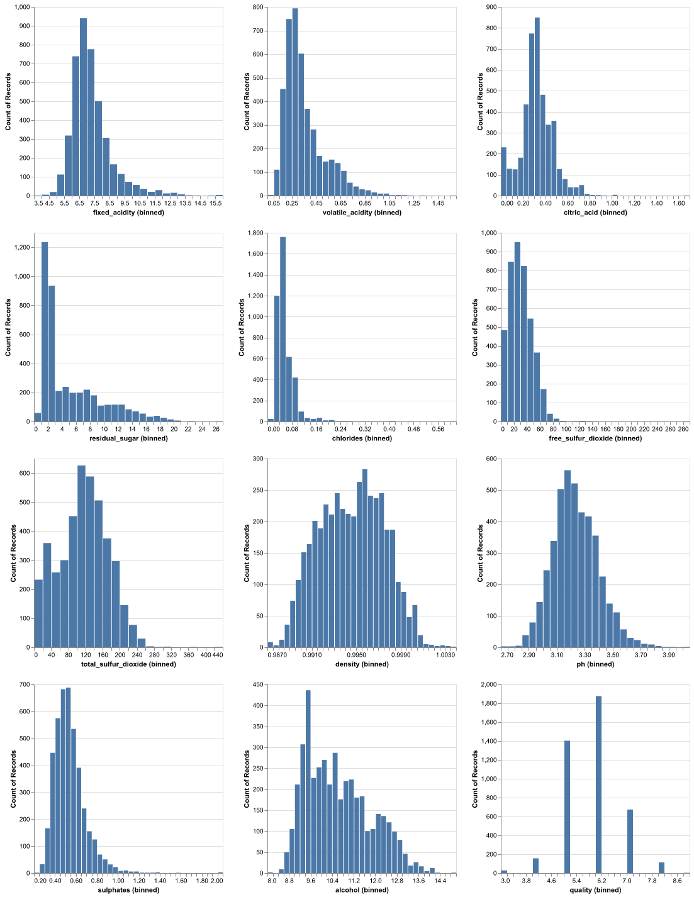
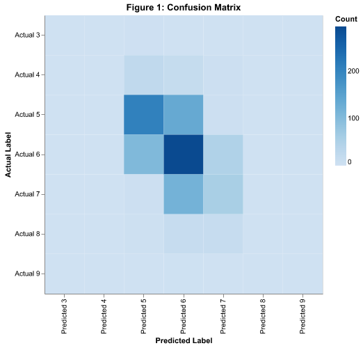
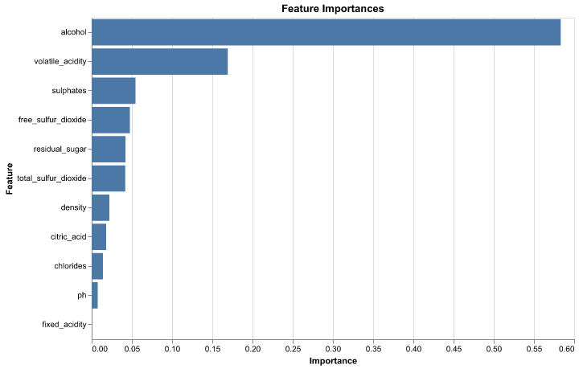

| precision | recall | f1-score | support |
|---|---|---|---|
| 0 | 0 | 0 | 2 |
| 0 | 0 | 0 | 50 |
| 0.59 | 0.59 | 0.59 | 347 |
| 0.51 | 0.66 | 0.57 | 448 |
| 0.43 | 0.31 | 0.36 | 181 |
| 0 | 0 | 0 | 35 |
| 0 | 0 | 0 | 1 |
| 0.52 | 0.52 | 0.52 | 0.52 |
| 0.22 | 0.22 | 0.22 | 1064 |
| 0.48 | 0.52 | 0.5 | 1064 |
Wine Quality Prediction
1 Summary
This project aims to analyze patterns in wine data through exploratory data analysis (EDA) and develop predictive models to classify wines or predict their quality. The analysis includes uncovering relationships between key features and their influence on wine quality, visualizing distributions and correlations, and identifying significant predictors. Predictive models such as logistic regression and random forests are developed and optimized using cross-validation and hyperparameter tuning.
By leveraging machine learning techniques, we evaluated model performance with metrics like accuracy and F1-score, providing actionable insights for enhancing wine quality. The results offer a data-driven approach to understanding wine characteristics and their impact on quality, benefiting decision-making in winemaking and marketing.
2 Introduction
2.1 Background Information
The quality of wine plays a crucial role in the wine industry, as it directly affects consumer satisfaction, pricing, and demand. Traditionally, wine quality is determined through sensory analysis by trained experts, who evaluate factors such as taste, aroma, and texture. However, these evaluations are inherently subjective, costly, and time-consuming.
With advancements in data analysis and machine learning, it is now possible to model and predict wine quality using objective, measurable features. These features include chemical and physical attributes such as acidity, sugar levels, alcohol content, and more, which directly influence the sensory properties of wine.
2.2 Research Question
The primary question we sought to answer in this project is: “Can the quality of wine be effectively predicted based on its measurable physicochemical properties? Additionally, which features are most influential in determining wine quality?”
This project aimed to explore whether measurable data about wine’s chemical and physical properties could provide a reliable means of assessing its quality. By identifying the most important predictors of wine quality, we can gain insights into the production processes that have the greatest impact on consumer satisfaction.
2.3 Methodology Overview
We utilized the Wine Quality Dataset from the UCI Machine Learning Repository, which contains information about Portuguese “Vinho Verde” wine. (Cortez et al. 2009)
Our analysis involved: - Data cleaning and preprocessing - Exploratory data analysis - Classification modeling using Decision Tree - Hyperparameter tuning - Model evaluation and feature importance analysis
3 Data Preparation and Exploration
3.1 Dataset Characteristics
Our dataset contains 5318 wine samples where
- 4,898 observations are of white wines
- 1,599 observations are of red wines
- 11 numerical input features representing physicochemical attributes

Figure 2 shows the distribution of various features in our dataset.
4 Model Development
To develop the decision tree classifier, we initialized a base model using DecisionTreeClassifier with a fixed random seed (random_state=16) to ensure reproducibility. A hyperparameter tuning process was conducted using GridSearchCV to identify the optimal configuration. The grid search evaluated various combinations of hyperparameters, including max_depth, max_features, min_samples_leaf, and min_samples_split, over a 5-fold cross-validation.
The best-performing hyperparameters identified were:
- max_depth: 5
- max_features: None
- min_samples_leaf: 1
- min_samples_split: 2
The model was optimized using the accuracy metric (scoring='accuracy') and leveraged parallel processing for efficiency (n_jobs=-1).
4.1 Model Performance
The Decision Tree model (Boulesteix and Strimmer 2007) achieved a test accuracy of 52.44% .

Figure 3 provides the confusion matrix of the model.
The classification report in Table Table 1 provides a summary of the model’s performance across different classes. Notably, the highest F1-scores are observed for classes 5 and 6, indicating the model performs well in these categories. However, performance is poor for class 3 and class 9, with precision, recall, and F1-scores all registering as zero. This suggests potential issues with class imbalance or inadequate representation in the dataset. Overall accuracy is 62%, with weighted averages for precision, recall, and F1-score also at 62%.
4.2 Feature Importance

The feature importance plot highlights the relative significance of each feature in the model. The most influential feature is alcohol, followed by volatile_acidity and sulphates. These features contribute significantly to the predictive performance of the model, while other features like fixed_acidity and pH have minimal impact. This information can be used to focus on the most important variables for further analysis or model refinement.
5 Discussion
5.1 Key Findings
Our analysis revealed that: - Top predictive features include density, volatile acidity, and alcohol content as seen in Figure 4. - The model achieved moderate predictive performance - Physicochemical properties provide insights into wine quality
5.2 Limitations and Future Work
Future research could explore:
- Ensemble methods for improved accuracy
- Incorporating sensory attributes
- Investigating additional domain-specific features
6 Conclusion
This project demonstrates the potential of machine learning in understanding wine quality through objective, data-driven analysis. While our model provides valuable insights, there remains significant opportunity for refinement and deeper exploration.
7 References
Boulesteix, Anne-Laure, and Korbinian Strimmer. 2007. “Partial Least Squares: A Versatile Tool for the Analysis of High-Dimensional Genomic Data.” Briefings in Bioinformatics 8 (1): 32–44.
Cortez, Paulo, Antunes Cerdeira, Fernando Almeida, Telmo Matos, and José Reis. 2009. “Modeling Wine Preferences by Data Mining from Physicochemical Properties.” Decision Support Systems 47 (4): 547–53.